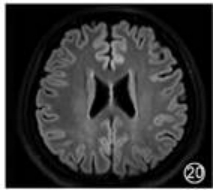
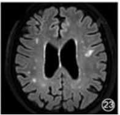
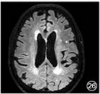
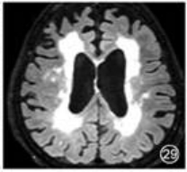

基于深度学习的阿尔茨海默病 MRI 影像辅助诊断系统
本系统采用 EfficientNet-B0 预训练模型 对 2D 横断面 MRI 切片进行四分类判别（非痴呆、极轻度、轻度、中度痴呆）；
通过 Grad-CAM 可视化技术 定位解释模型诊断依据；
诊断结果严格映射临床通用量表：GCA 全脑皮层萎缩量表（0–3 级） 与 Fazekas 脑白质病变评分（0–3 分），确保无论输入切片是否含海马体，均能给出符合放射科规范的病理评估；
使用说明：① 填写患者基本信息；② 上传单张 2D MRI 横断面切片（PNG/JPG）；③ 点击“开始诊断”，系统将返回：四分类置信度、病变演进轨迹、原始图像与 Grad-CAM 热力图对比、以及基于 GCA/Fazekas 的临床级病理解读。
Patient Info 患者信息录入
MRI Scan Acquisition 影像输入
手动点击或拖放 MRI 影像到这里
支持 PNG, JPG, JPEG 格式图片文件
等待输入诊断源
请在左侧配置患者病历卡，并上传对应脑区的 MRI 核磁影像切片以拉起推理模型。
Standard Clinical References 阿尔兹海默症标准病理分期图谱对照

GCA 0级 (无脑萎缩)：皮质脑回形态充沛，无回沟变宽。脑室比例正常。
Fazekas 0分 (无病灶)：深部髓质髓鞘完整，T2/FLAIR 下没有或仅存有1个孤立的白质高信号(WMH)点。[1]

GCA 1级 (轻度脑萎缩)：大半脑沟可见轻度代偿性增宽，脑脊液蛛网膜裂隙轻微变深。
Fazekas 1分 (散在病灶)：深部白质显现数个点状高信号退行灶，目前各病灶间互不连结。[1]

GCA 2级 (中度脑萎缩)：脑回实质收缩，脑沟裂隙加深增宽明显。侧脑室表现中度增宽。
Fazekas 2分 (病灶融合)：白质病灶区扩散扩大并开始跨纤维连结，呈典型的“桥接”表现。[1]

GCA 3级 (重度脑萎缩)：皮层高度薄化，脑回极扁极窄呈“刀片样萎缩”，侧脑室球状扩张变宽。
Fazekas 3分 (大片融合)：脑髓质白质大范围弥漫融连成片。常伴缺血小血管病变。[1]
References 参考文献
- [1] 中华医学会放射学分会磁共振学组, 北京认知神经科学学会. 阿尔茨海默病MR检查规范中国专家共识[J]. 中华放射学杂志, 2019, 53(8): 635–641.